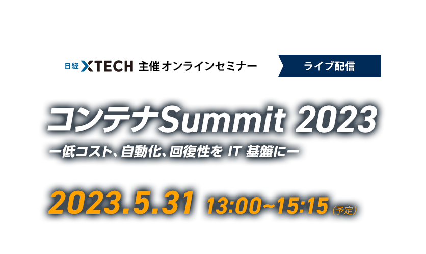

お申し込み受付を
終了しました
DXの新基盤「コンテナ」の真価を知る一日
～システム開発の「真のスピード化」を実現するために～
デジタルトランスフォーメーション（DX）を実現するためのIT基盤として「コンテナ」の採用が増えています。
コンテナの利点は、ビジネスの急激な変化にシステムを素早く確実に追従させられること。
たとえば巨大なシステムを「マイクロサービス」に分割し、マイクロサービス単位で素早くプログラムを更新するクラウドネイティブ型のシステム開発や、システムの安定稼働を実現する新しい手法である「SRE（サイト・リライアビリティー・エンジニアリング）」や「オブザーバリティー（システムの可観測性）」。これらの取り組みには、マイクロサービスの実行環境であるコンテナや、コンテナの運用を自動化する「Kubernetes」などのコンテナエンジンが不可欠であることから、DX先進企業で導入が本格化しています。
そこで日経クロステックでは昨年に続き、「コンテナSummit 2023」を開催することにいたしました。
コンテナ導入を成功した企業による先進事例、サービス、今後の可能性を紹介していきます。
本当の意味での「DX化」のヒントになるオンラインセミナーです。是非ご参加ください。
＜コンテナSummit 2023 受講のポイント：例えばこんな方は必見のセミナーです＞
・クラウド開発、DX化の先進基盤である「コンテナ」について学びたい方
・経営環境の変化に迅速に対応すると同時に、システムの安定稼働も図りたい方
・本当の意味での「DX」を低コストで進めたい方、先進事例を知りたい方
ご講演終了後に主催者アンケートがございます。
ご回答頂きました方の中から抽選で50名様に
「Amazonギフト券（1,000円分）」をプレゼントさせて頂きます。
ぜひ最後までご視聴ください。開催概要
- 名称
-
コンテナSummit 2023
ー低コスト、自動化、回復性を IT 基盤にー
- 日程
-
2023年5月31日（水）
13：00～15：15 （予定）
- 開催形式
- オンライン（ライブ配信型 Webセミナー）
- 主催
- 日経クロステック
- 協賛
- New Relic、Sysdig Japan（ABC順）
- 参加料
- 無料（事前登録制）
- 対象者
- 企業における情報システム部門や経営部門の企画担当者
インフラ担当者、運用担当者、情報システム子会社
ユーザー企業に常駐している SIer ほか
プログラム
※講演者や講演時間など、プログラムは変更になる場合がございます。予めご了承ください。
-
13:00～13:30
-
【主催者講演】
EC2中心のモノリスシステム＆ベンダー丸投げとは縁を切れ！コーセーが推進するコンテナ活用術
コーセー
情報統括部 DX推進課池田 一樹 氏EC2を使った仮想サーバ構成からからコンテナ中心のマイクロサービス化に舵を切ったコーセー。コンテナ導入までの経緯と導入後のメリット/デメリットを、今後の展望を交えてお話します。脱EC2を目指している方、コンテナの活用を計画されている方、必見です。
-
13:35～14:05
-
【ソリューション講演】
Yahoo! JAPANのコンテナセキュリティへの取り組み
Sysdig Japan
日本地域担当技術責任者清水 孝郎 氏Yahoo! JAPAN
システム統括本部
クラウドプラットフォーム本部技術５部
コンテナセキュリティ リーダー風早 大 氏Sysdig Secure DevOps Platformをどのように活用して、コンテナ基盤を守っているのか。実際に稼働しているコンテナイメージに対して、Yahoo! JAPANが行なっているコンテナセキュリティに対する実践的な取り組みについてご紹介します。
-
14:10～14:40
-
【ソリューション講演】
4年間の取り組みで実現したコンテナ技術を活用したスケーラブルなインフラ構築とコスト削減
New Relic
技術統括 コンサルティング部
ソリューションコンサルタント大平 譲 氏MIXI
Vantageスタジオ みてねプロダクト開発部
基盤開発グループ マネージャー 清水 勲 氏「家族アルバム みてね」を運営するMIXIは、ユーザー数の増加とサービスの拡大に対応するため、2018年頃に従来のAmazon EC2ベースのインフラから、コンテナベースのAmazon EKSへの移行を決定しました。そこから4年間にわたる取り組みの中で、コンテナ技術がなぜ必要だったのか、そのメリットや運用面での変化を解説します。また、移行プロセスを振り返り、オブザーバビリティを活用した効果的なスケールアウトやインフラコスト削減の実現方法といった知見を提供します。
-
14:45～15:15
-
【主催者講演】
高速・低コストでシステム開発を進める方法、横浜ゴムの選択
横浜ゴム
IT企画本部 システム開発部 システム開発３グループ
グループリーダー福井 仁 氏横浜ゴムは2021年にサプライチェーン管理システムを内製化しました。ITインフラストラクチャーの選択肢としては、仮想マシンやPaaS（プラットフォーム・アズ・ア・サービス）やコンテナなどを検討しました。その中でも、システム開発やその後の改善を高速化すると共に、低コストも実現できるとして選択した手法は何だったのか。検討の過程やシステム開発の実態を紹介します。
お申し込み
■視聴環境事前ご確認のお願い
Webセミナー【ライブ配信】ご参加にあたり、「視聴環境チェックサイト」での動作確認をお願いしております。音声および動画が正常に受信できるかを、下記「視聴環境チェックサイト」へアクセスしていただきご確認ください。
なお、お客様がご使用のパソコンおよび通信環境によってはWebセミナー【ライブ配信】にご参加いただけない場合がございますので、あらかじめご了承ください。
▼視聴環境チェックサイト（PC・スマートフォン）
https://ondemand.seminar.vcube.com/checker/videostream
※チェックサイトで視聴に問題がある場合は、まずセミナーの推奨環境に合っているかをご確認ください。
▼セミナー推奨環境(ビデオストリーミング配信の「受講者」の項目をご確認ください)
https://jp.vcube.com/support/requirements/req_seminar.html
※受講者側で推奨しているPCブラウザ・OSは、以下となります。
Windowsプラウザ・・・Microsoft Edge、Mozilla Firefox、Google Chrome
Macブラウザ・・・safari
WindowsOS：Windows 11、Windows 10、Windows 8.1
MacOS：macOS 最新版
※受講者側で推奨しているスマートフォン・タブレットのブラウザ・OSは、以下となります。
iOS ・・・iOS デバイス iOS 10以上、Safari
Android・・・ Android 6以上、Google Chrome
※インターネット環境によっては視聴が出来ない場合がありますので、視聴確認サイトから、受講される環境にてテストをお願いします。
本イベントへのお申し込みには、「日経ID」への会員登録（無料）が事前に必要となります。
すでに会員の方は、ログイン後、ご登録内容をご確認のうえお申し込みください。
未登録の方は、画面の指示にしたがい、登録を完了させてください。
お問い合わせ
日経BP読者サービスセンターセミナー係
お問い合わせお申し込み受付を
終了しました